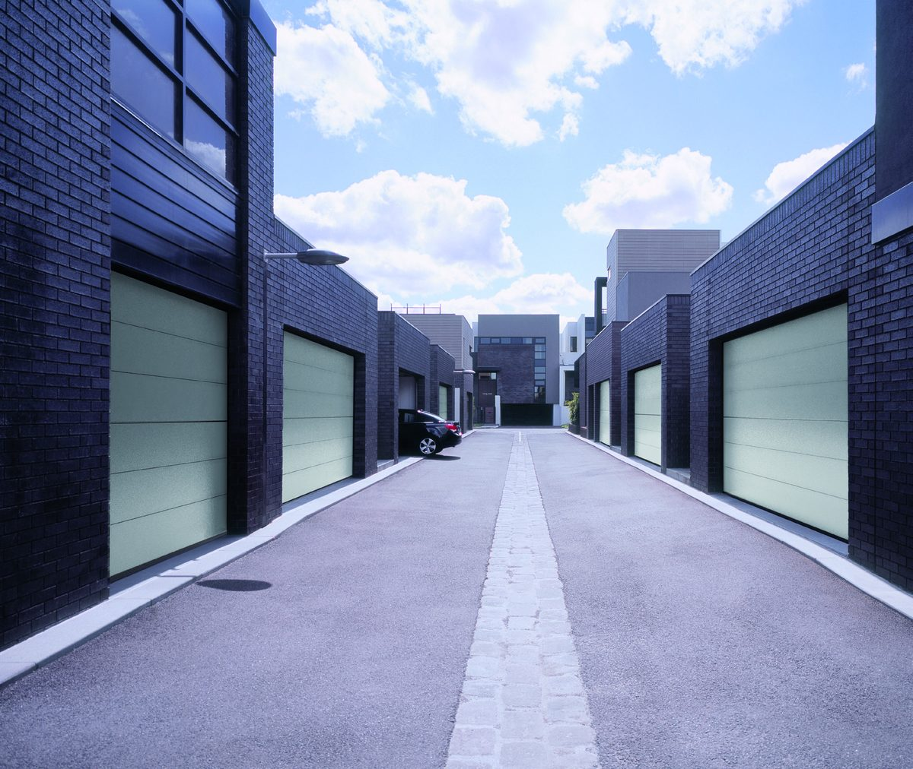
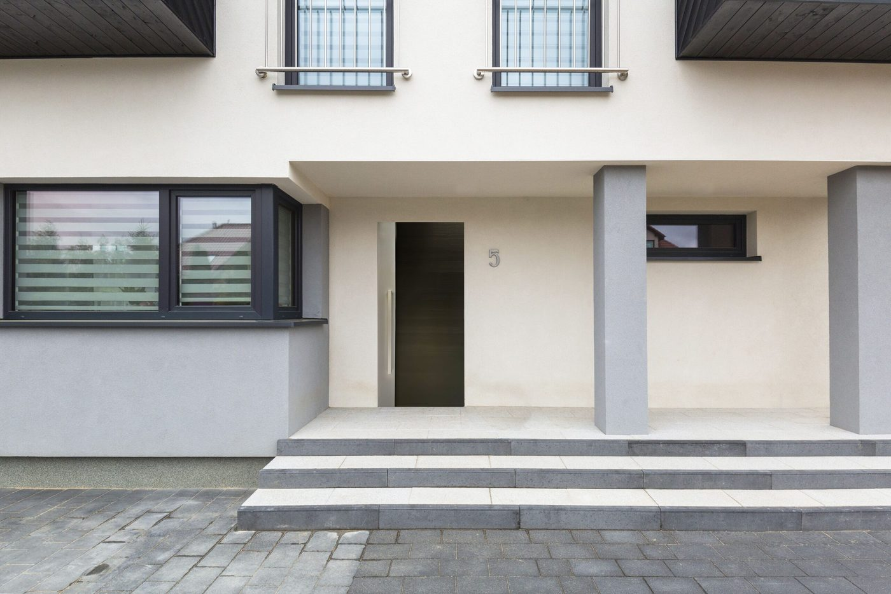
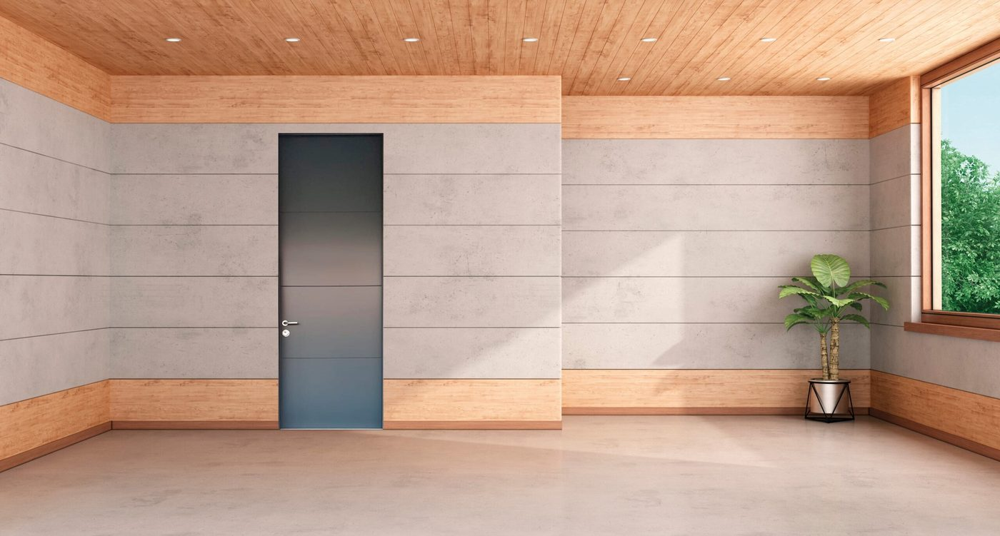
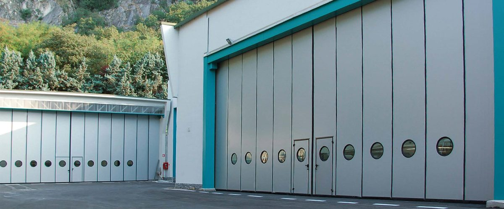
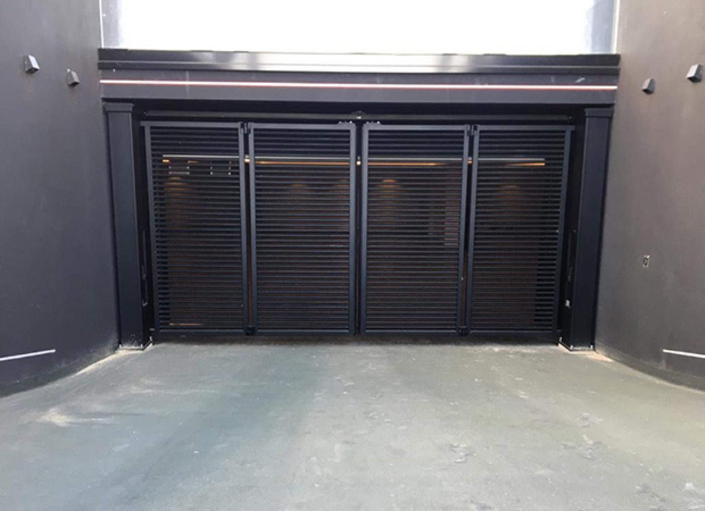
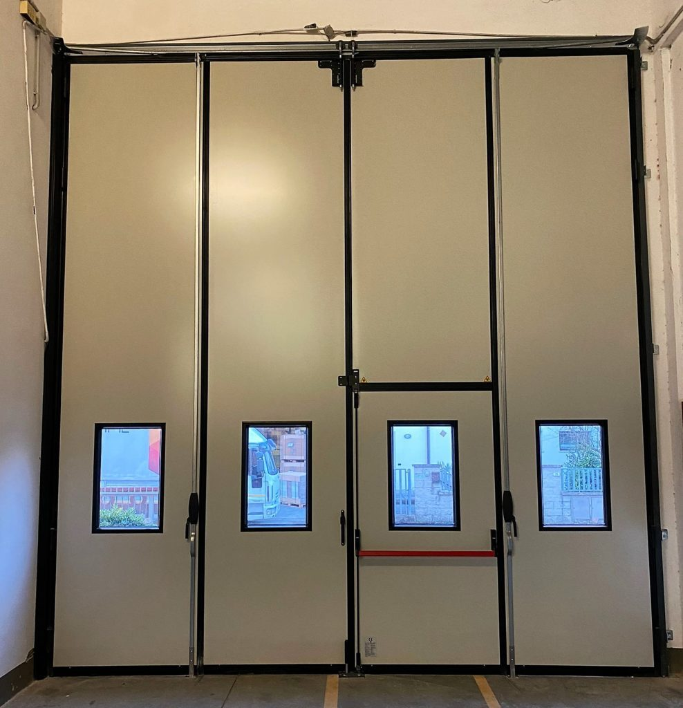

Ausgewählte Projekte und Ausführungsbeispiele.
Ein Eindruck von Bauarten, Materialien und Farben, wie sie bei uns möglich sind, von der Einzelgarage bis zur Industriehalle.
Die folgenden Bilder zeigen Ausführungsbeispiele aus unserem Programm sowie eigene, bereits umgesetzte Projekte. Sie sollen einen Eindruck von Bauart, Material und Farbe geben, keine bestimmte Adresse oder einen bestimmten Kunden.
Garagentore
Garagentore.




Haustüren
Haustüren und Sicherheitstüren.




Industrie und Hof
Industrie- und Hoftore.





Ihr Projekt könnte das nächste sein.
Rufen Sie an oder senden Sie uns Maße und Fotos. Wir melden uns innerhalb eines Werktags.